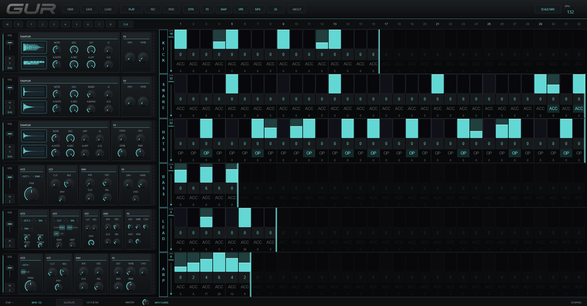
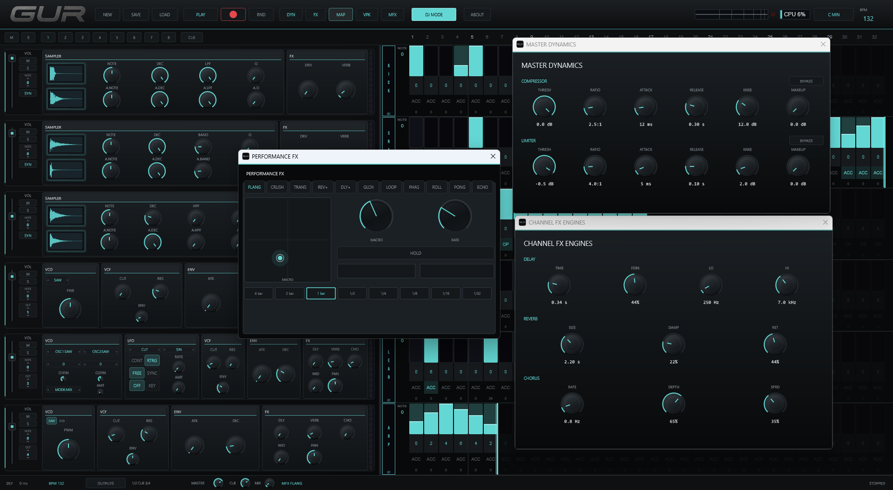
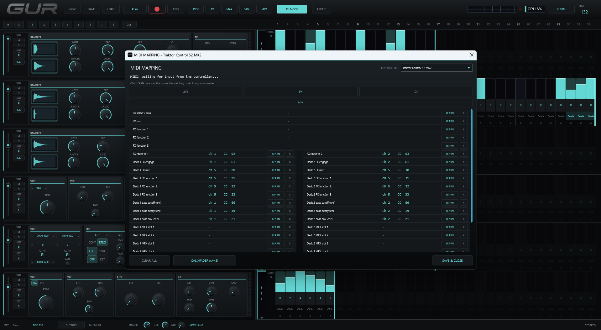
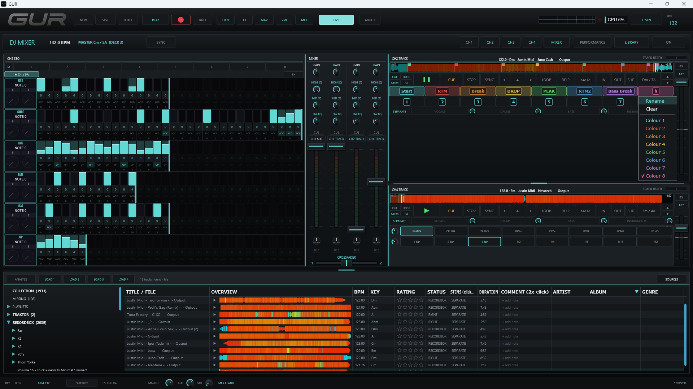
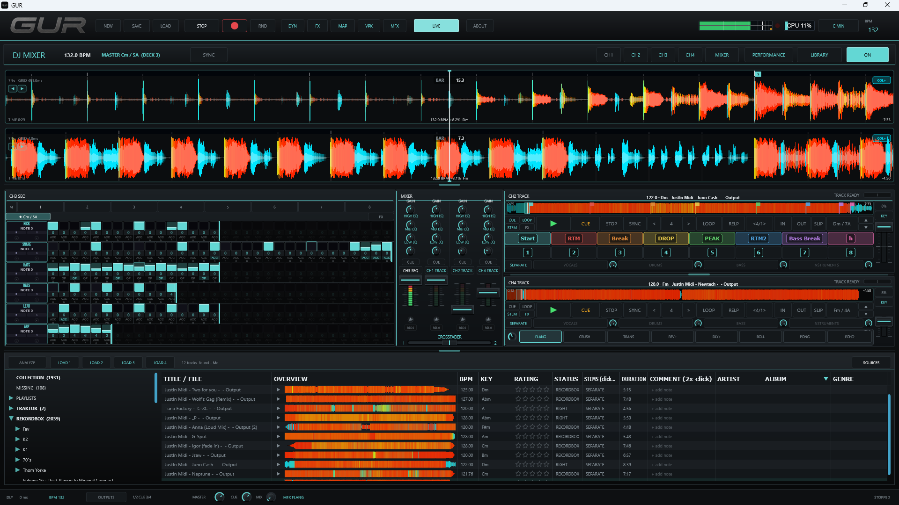
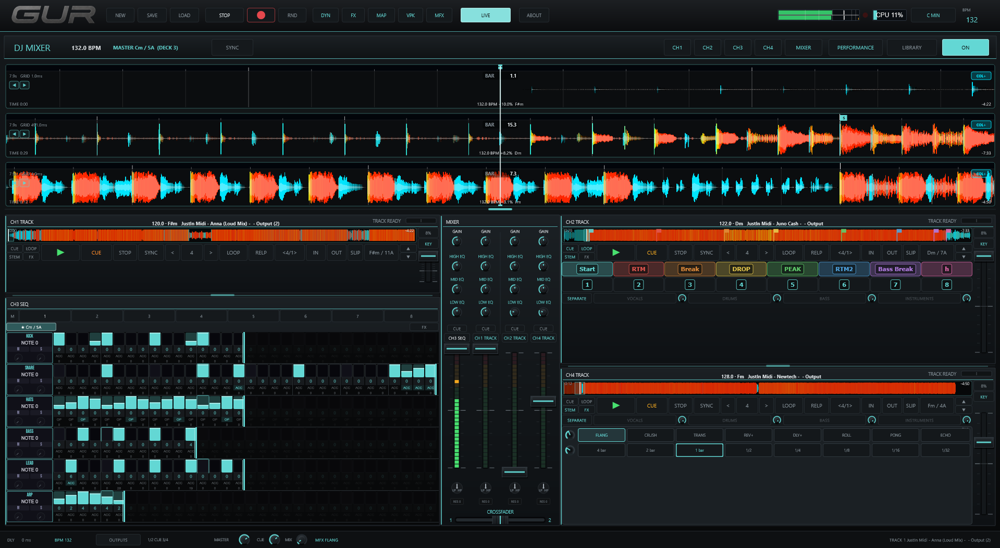

A standalone instrument for live performance — expandable live channels, drum and percussion engines, four decks, live throw FX, and a sample-accurate sequencer in one app.
THE NATIVE APP
A glance. Standalone Windows / macOS, low-latency, ASIO + MIDI.






Open email with…
TRY IT IN YOUR BROWSER
The browser-based reference. Click LIVE inside the frame to start, then use the mixer and sequencer to build beats.
Press PLAY inside the frame to start audio. Best in Chrome / Edge / Firefox on desktop. The full native app (low-latency, ASIO, MIDI) launches when it's ready.
WHAT'S INSIDE
One app. No DAW. No host. No plugins.
POLYMETRIC SEQUENCER
Every channel runs its own 32-step grid with an independent loop length — layer polymeters and patterns that drift in and out of phase. Per-step velocity, accent, modulation, global swing, and sample-accurate timing.
OPTIONAL 8-CHANNEL LIVE MODE
GUR still opens in the clean 6-channel Live Mode by default. Add CH7 and CH8 only when you need them, and the live rack reflows into the same performance area instead of opening a separate page.
GLOBAL OR CHANNEL PATTERNS
The pattern row can target the whole live set or one selected channel. Switch CH1-CH8 into focus, load or save a single channel pattern, then return to global mode for full-pattern changes.
256-BAR PIANO ROLL
Write long-form melodic parts inside the live sequencer — up to 256 bars per channel, with drawn note lengths, per-beat velocity, accent/open states, copied automation sections, and real-time read/write recording.
PERCUSSION SYNTH / SAMPLER
A new flexible Percussion engine sits alongside Kick, Snare, Hats, Bass, Lead and the classics. Load it into any live channel slot, including the optional seventh and eighth channels.
FOUR FLEXIBLE DECKS
Four decks, each freely assignable — load a sequencer pattern or an audio track onto any of them. The full CDJ workflow, in software — no DAW, no host.
DJ LIBRARY & IMPORT
A built-in collection with playlists. Import straight from Traktor, Rekordbox and VirtualDJ — BPM, beatgrids, keys and hot cues come across — or read a live Rekordbox database directly.
HARMONIC KEY MIXING
Automatic musical / Camelot key per deck, with real transposition. Mix in key across sequencer and track decks, and shift any deck to match.
CDJ-GRADE LOOPS & CUES
Beat loops, manual loops and slip mode, plus 8 saved loops and 8 hot cues per deck — phase-locked to the sequencer with continuous beat-sync, and a direct route into the master FX rack.
KEY-LOCK TIME-STRETCH
High-quality stretching keeps pitch locked while you ride the tempo — or unlock it for full vinyl-style pitch bends.
STEM SEPARATION
Offline 4-stem separation per track — vocals, drums, bass, other. Mute, solo, set the level of each stem and route any stem into the master FX rack — all straight from the deck.
LIVE THROW FX
Hold-to-engage pad rack with eleven throwable effects — flanger, crusher, transient, reverb, delay, glitch, beat-loop, phaser, roll, ping-pong and echo — plus filter sweeps, all beat-synced and quantized to the drop.
MASTER FX RACK
A lush FDN reverb, tempo-synced delay and a musicality layer on the master bus — with a live performance panel to ride them.
STUDIO-QUALITY EXPORT
Render your set to WAV, AIFF, FLAC, MP3 or AAC — at the right tempo and key, with full metadata. A faithful recording of exactly what you heard.
MIDI CONTROLLER MAPPING
Table-driven MIDI Learn with per-device profiles. Works out of the box with the Traktor Kontrol S2; map any controller — Traktor S4, Pioneer DDJ-FLX and more.
PRICING
One-time purchase. No subscription. All v1.x updates free.
LAUNCH PRICE
Standard $129 after the first month
- One-time purchase
- No subscription
- All v1.x updates free
- 30-day full-featured trial
- Windows 10 / 11 + macOS
- MIDI controller mapping
Launching September 1, 2026 · Windows & macOS
PLATFORMS
21ST CENTURY ARTISAN
We build machines for the stage. Virtual and physical. Standalone, low-latency, tuned for live use. GUR is our debut.
Built by Nadav Hecht Drayson
contact@21stcenturyartisan.comBECOME A BETA TESTER
Beta testing is free. Apply before the September 1 launch, download GUR directly, and explore the complete instrument on your own rig.
Start immediately — after the short application, download the current Windows installer directly from this site. Your full-featured 30-day trial begins automatically when you first open GUR. No coupon, checkout, or serial key required.
Direct Windows 10 / 11 download · GUR 1.0.202 · 30-day trial